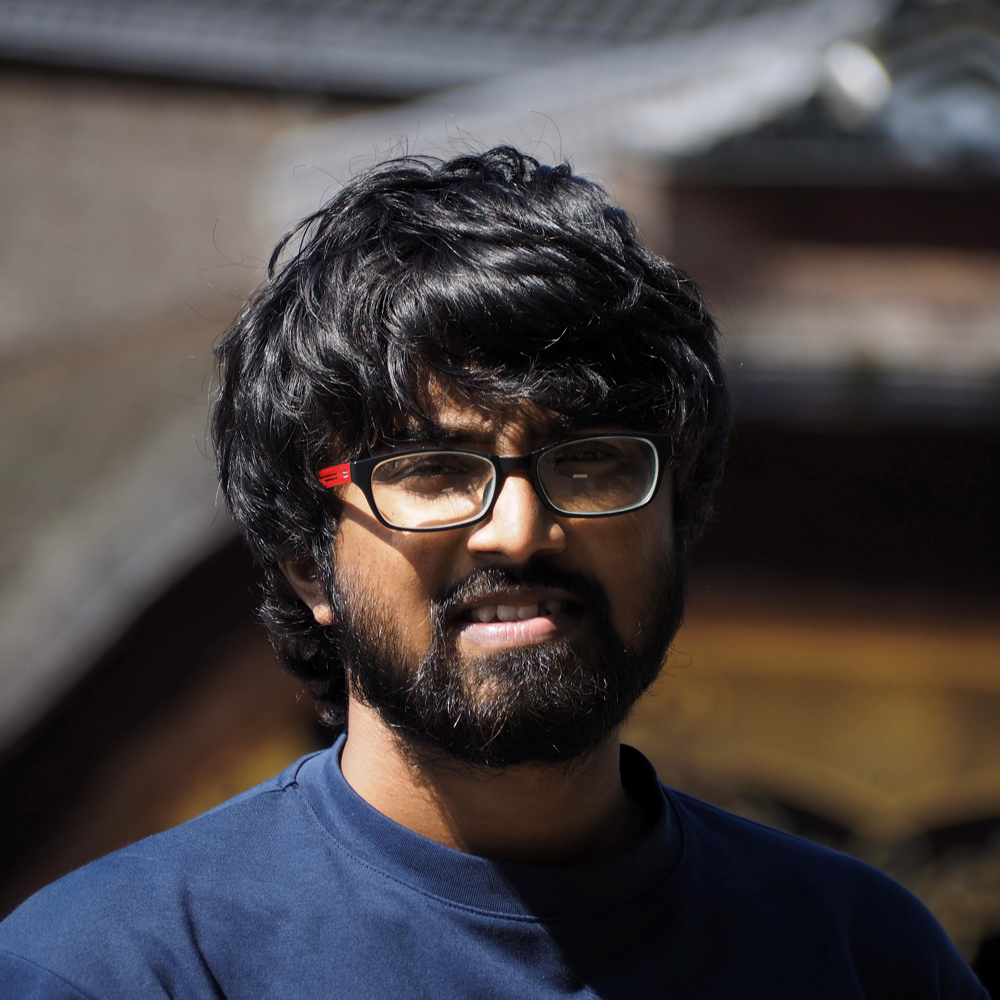

I am a doctoral researcher at the Coastal & Estuary Engineering Laboratory, Yokohama Naitonal Unviersity
Here, I share my journey as a PhD student and my experiences in Japan.
Research
Explore my research interests, projects, and recent publications in the field of water engineering.
At the end of this page, you can find the full list of publications and research presentations.
List of publications
Thilakarathne, S., Suzuki, T. and M¨all, M., Machine learning-driven approach to quantify the beach susceptibility to storm-induced erosion, Coastal Engineering Journal (under review), (2023).
Thilakarathne, S., Suzuki, T. and M¨all, M., Applying Artificial Neural Networks for Storm-induced Beach Erosion Vulnerability Prediction, Journal of Japan Society of Civil Engineers (forthcoming), (2023).
Thilakarathne, S., Suzuki, T., M¨all, M., Hiaga H. and Md Malek A., A Simple Approach to Predict the Beach Vulnerability to Storm-induced Erosion in Hasaki Coast, Japan, Journal of Japan Society of Civil Engineers, https://doi.org/10.2208/kaigan.78.2 I 985, (2022).
Thilakarathne, S., A Case Study on Sustainable Restoration Approach for Cascade Reservoir Systems in Jaffna Municipal Council for Effective Flood Management, M.Sc. Thesis, University of Moratuwa, http://dl.lib.uom.lk/handle/123/15816, (2019).
Thilakarathne, S., Rajapakse, L. and Wijayaratna N., Effect of Climate Change on Monthly Pond Storage Variation - A Case Study in Jaffna, Sri Lanka, International Conference on Civil Engineering and Applications - ICCEA2019, (2019).
Thilakarathne, S., Wijayaratna N. and Rajapakse, L., Scenario analysis to identify a sustainable pond rehabilitation approach for flood mitigation: A case study in Jaffna, Sri Lanka, International Conference on Capacity Building for Research and Innovation in Disaster Resilience (ASCENT Festival - 2019), (2019).
Thilakarathne, S., Wijayaratna N. and Rajapakse, L., Holistic behavior of urban pond systems for flood risk mitigation - a case study in Jaffna municipal council, International Conference on Sustainable Built Environment (ICSBE - 2018), (2018).
Thilakarathne, S. and Wijayaratna N., A case study on the retention tanks in the ancient cascade system, Moratuwa Engineering Research Conference (MERCon), https://doi.org/10.1109/MERCon.2018.8421942, (2018).
Teaching
Discover the courses I have taught and my approach to education, including resources and syllabi.
Teaching Experience
Succeed Co., Ltd
Sep 2022 - Present Language and Mathematics Tutor Tokyo, Japan
Provide language and mathematics tutoring services.
University of Moratuwa
Apr 2019 - Apr 2020 Lecturer in Civil Engineering Moratuwa, Sri Lanka
Delivered lectures, tutoring sessions, and design classes for modules: Fluid Mechanics 2; Hydraulic Engineering 2; Hydraulic Design.
Managed Hydraulic Engineering Laboratory: scheduled & set up laboratory experiments.
Led training sessions on Hydraulic and hydrology tools: HEC-RAS (River Analysis System); Computer-based analysis of pipe networks.
CINEC Campus
Dec 2019 - Sep 2020 Visiting Lecturer in Civil Engineering Malabe, Sri Lanka
Delivered lectures, tutoring sessions, and design classes for modules: Advanced hydraulics design and modeling; Hydrology.
About me

I am Salika Thilakarathne, a PhD student at Yokohama National University, set to graduate this September.
With a passion for water engineering, particularly in coastal engineering, my academic journey has led me to focus on nearshore
changes to the extreme storm conditions. My previous research centered on surface water hydrology, focusing on the effect of cascade
retention and detention systems on flood mitigation.
Contact
Feel free to reach out to me for collaborations, inquiries, or just to say hello. I am always open to connecting!